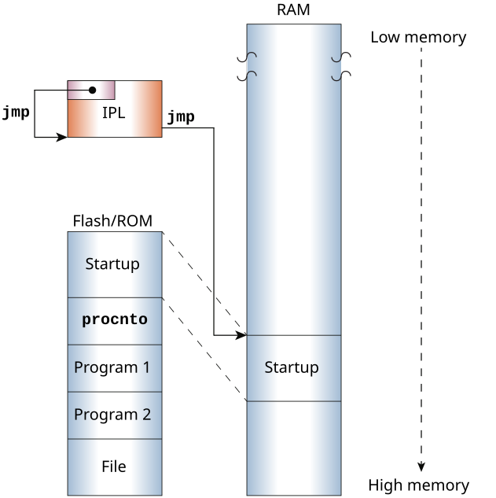
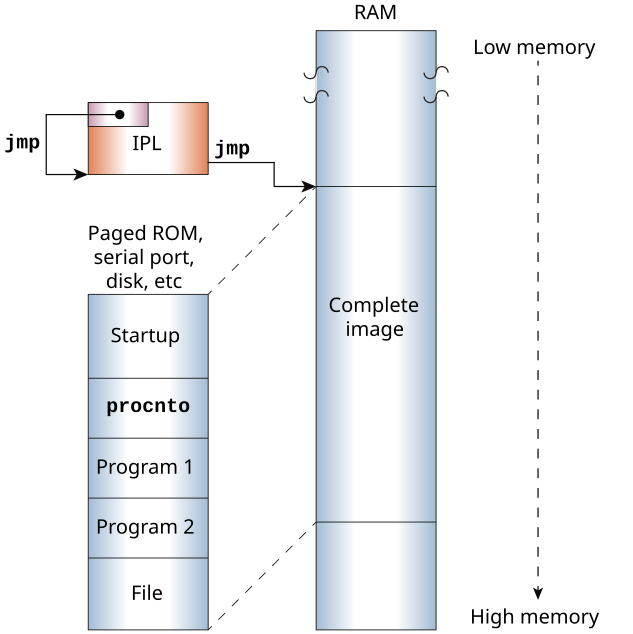

The media on which the bootable OS image is stored, and how it is stored (compressed
or not) determine what the IPL must do with the image.
The type of removable media used to store the IPL and the IFS affects many aspects of the
IPL design. One significant factor is whether the storage media is linearly mapped
(e.g., NOR FLASH) or non-linearly mapped (e.g., eMMC, SD card), because it determines if
the IPL can use eXecute In Place (XIP).
Other important factors include whether the image is compressed, and the device on which
it is stored (see Image storage methods
).
Linearly mapped devices
With linearly mapped devices (e.g., ROM devices), the entire image is in directly
addressable storage that maps its entire address space into the processor's address
space. The processor can address any location in the OS image, so the IPL needs to
copy only the startup code (not the entire image) into RAM, leaving the rest of the
image on the device.
Figure 1. IPL loading of startup code from device into RAM, with rest of image left on
device.

If the removable media is linearly mapped, the IPL can use XIP. In this case, the
.text section of the IPL (the code) in the linker file (e.g.,
mx6sx-sabre-sdb.lnk or vayu-evm.lnk)
must be in the linearly mapped address space.
Note:
All of the IPL assembly code can run before the image is copied into RAM.
Non-linearly mapped devices
With non-linearly mapped devices (e.g., eMMCs, SD cards, or SPI NOR devices), the
image is in storage that can't be mapped directly into the processor's address space.
The processor can't address the OS image, so the IPL needs to copy the entire image
(including the startup code) into RAM.
Figure 2. IPL loading of entire image from device into RAM.

Compressed images
If a bootable image is too large to store on the removable media in its original
form, or if hardware limitations (e.g., slow bus) make copying and extracting the
compressed image more efficient than copying the image in its original form,
the bootable image may be compressed on either a linearly mapped or a non-linearly
mapped removable storage device.
When it builds the OS image, the mkifs utility checks for the
compress attribute in the buildfile. If the attribute is set
(e.g., [virtual = x86_64, bios +compress boot = { ),
mkifs compresses the image (see the OS Image Buildfiles chapter).
If the image is compressed, it must be copied to RAM and extracted before the
main() function in the IPL's second stage calls the
image_scan() function. When you write an IPL or update a
system that uses a compressed image, ensure that you:
- Copy the compressed image to a RAM location other than the address where
you will extract it.
- Extract the image so the startup code is at the address where your IPL will jump
to when it has finished.
- Leave enough room for the entire uncompressed image between the location where
you copy the compressed image and the address to which you will extract it.
CAUTION:
If you change or add components, this will likely increase the size
of your image. Check that there is enough room for the new, larger image between the
start address of the uncompressed image and the address where you first copy the
compressed image into RAM.
For examples of how different storage options are used, see Image storage methods
in this chapter.
Image locations
The IPL can load the OS image from different types of devices or over a network,
depending on what the board supports. The locations where OS images are often stored
include:
- Disk
- Most embedded systems now use solid-state media such as a USB key, SD or
micro SD card, or eMMC, though some may still use a rotating disk. The
board's platform type determines the kind of media, if any, from which the
system can boot.
- With x86 boards, for example, booting from disk is the simplest boot method.
The BIOS or UEFI performs all of the work: it fetches the image from disk,
transfers it to RAM, and starts it.
- With ARM boards, booting from disk requires at least:
- A driver that knows how to access the disk.
- IPL code that examines the disk's partition table and locates the OS
image.
- IPL code that either maps the image portions into a window and
transfers bytes to RAM (solid-state disk), or fetches the data bytes
from the disk hardware (rotating disk).
- Network
- If the board has a PCI network card, the OS image can be loaded over an
Ethernet network and placed in the processor's address space.
- DHCP server
- On some embedded boards, the boot loader contains DHCP code. This code
knows how to talk to the networking hardware, and how to get the OS image
from a remote system.
- To boot a QNX OS system using DHCP,
you need a DHCP-capable boot loader for the OS client and a DHCP server
(e.g., dhcpd). Since the TFTP protocol is used to move
the image from the remote system to the client, a TFTP server is also needed
(e.g., tftpd). See the documentation for your development
host server for information on managing its DHCP and TFTP services.
- Serial port
- A serial port on the target can be useful during development for downloading
an image or as a failsafe mechanism (e.g., if a checksum fails, you can
simply reload the OS image via the serial port).
- A serial loader can be built into the IPL code so the IPL can fetch the OS
image from an external hardware port. The IPL process is almost identical to
the process used for a network boot, except that instead of an Ethernet
port, a serial port is used to fetch the image.
- A serial loader usually has little effect on an embedded system's cost.
Board vendors often include serial port functionality on their evaluation
boards, sometimes through a debug port.
In many cases, the serial port hardware and serial loader can be used during
project development, then omitted from the final assembly.
- QNX supplies source code for an embedded serial loader for the 8250 chip,
and the QNX SDP includes a utility that sends an OS image to a target over a
serial or parallel port (see sendnto in the
Utilities Reference).
Alternative method for loading the image
As well as supporting a primary method for loading the OS image, the IPL code may also
need to support an alternative loading method (e.g., an .altboot
in the case of a disk boot on x86 boards).
This secondary method may have to be an automatic fallback when the primary image is
corrupt. You can use a .boot directory with a list of fallback
IFSs that can be loaded from read-only media.
Image validation
To validate a bootable image, use the
checksum() function to
perform a checksum over the entire image. A call to validate an image looks like this:
checksum (image_paddr, startup_size);
checksum (image_paddr + startup_size, stored_size - startup_size);
Note: You can speed up the checksum calculation by enabling the cache before calling
checksum or another function, such as
image_scan(), that calls
checksum()
(see
Optimizing an IPL
in this chapter, and
enable_cache() in the IPL Library).